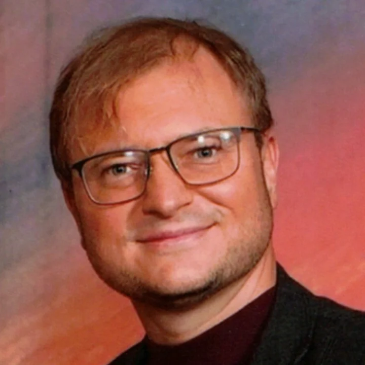

Prof. Aleksandr “Alex” Krasnok
Assistant Professor, Electrical & Computer Engineering
Research areas: complex-frequency electrodynamics, non-Hermitian scattering, superconducting/circuit-QED photonic interfaces, quantum control, metasurfaces, antennas, cryogenic sensing, nanophotonics, and computational electromagnetics.
Email: akrasnok@fiu.edu
Scholar: Google Scholar